Learning Objectives
After completing this lesson, you'll be able to:
- Learn how adding additional input files affects dynamic workflows.
- Use writer feature type and SchemaScanner parameters to create a dynamic fanout.
- Set the SchemaScanner Missing/Null/Empty Attributes parameter to control how empty attributes are handled when creating dynamic schemas.
In this lesson, you will:
- Optional: Watch a demonstration video (it repeats what we cover in live training).
- Scroll down to read the activity instructions below and, if it has an exercise, follow the steps in your lab.
- Complete the quiz at the end of this lesson.
- Click 'Next' to mark the lesson complete.
Resources
- Starting workspace
- If your computer has FMEData, the file path is C:\FMEData\Workspaces\AdvancedReadingAndWriting\build-dynamic-workflows-with-a-multi-dataset-schemascanner.fmw
- Complete workspace
- C:\FMEData\Workspaces\AdvancedReadingAndWriting\build-dynamic-workflows-with-a-multi-dataset-schemascanner-complete.fmw
- Vancouver Farmers Markets.csv
- C:\FMEData\Resources\DynamicWorkflows\Data\Vancouver Farmers Markets.csv
Introduction
At a basic level, the SchemaScanner is fairly simple to operate. However, more complex scenarios involve how the different parameters are used and the exact values of the incoming data.
The Missing/Null/Empty Attributes parameter controls the schema when incoming data is without values:
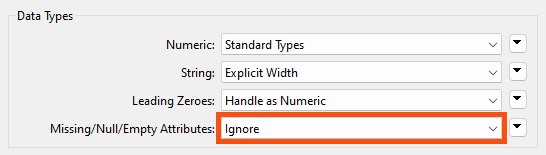
However, this only applies to data where the entire dataset is without a particular attribute value. In this dataset, for example, every value for MarketType is null. MergedAddress also has null values, but not for every record:
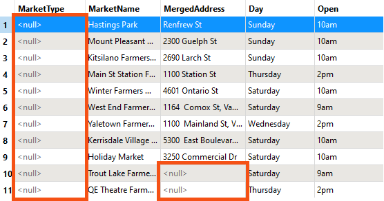
Given the above parameters, the output schema will not contain the MarketType field because it has no values:
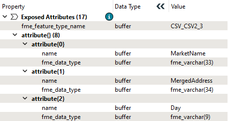
However, MergedAddress is included because some records still have values.
Now, say, for example, that we wanted to include MarketType in the output even though there are no values. There are two alternatives to the Ignore option:
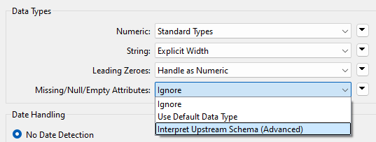
Because there are no data values, the SchemaScanner cannot scan the data to guess the data type. Instead, it can either use a default data type (a varchar of unknown length) or trace back through the workspace to find any clues to the data type.
In this case, the reader feature type has that information:
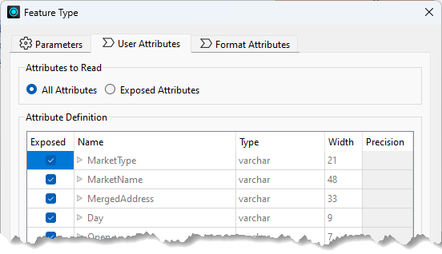
…so the SchemaScanner will use that and create an output schema where MarketType = varchar(21).
Exercise

Jennifer's market workspace now writes whatever schema it produces rather than the one it read, but it still covers a single market. She wants to bring the Vancouver farmers market data in alongside it, and give each day of the week its own output file with a schema that fits that day's data.
In this exercise, you will:
- Read two CSV datasets through one dynamic reader.
- Split the output into one file per day using an attribute as the file name.
- Use Group Processing on the SchemaScanner to give each output its own schema.
1) Open the Workspace
You can carry on from the previous exercise or start fresh. Either way, the second dataset can be brought in two ways, and it is worth knowing both: adding a reader is the obvious route, while pointing the existing dynamic reader at more files takes advantage of the fact that it does not care about schema.
- Continue with the workspace from the previous exercise, or open the starting workspace in FME Workbench 2026.2 or later.
- Choose a method to add the Vancouver Farmers Markets CSV, keeping the existing Cedar Cottage data.
- The data can be downloaded or accessed locally: C:\FMEData\Resources\DynamicWorkflows\Data\Vancouver Farmers Markets.csv.
Method #1: A New Reader
- Add the Vancouver Farmers Markets CSV using Build > Readers > Add Reader, or drag the CSV file onto the canvas.
- Connect the new feature type to the AttributeManager input port.
Method #2: Extend the Existing Reader
- Double-click the Navigator > Cedar%20Cottage CSV2 reader > Source CSV parameter.
- Click the drop-down arrow and choose Select Multiple Folders/Files.
- Click Add Files and choose the Vancouver Farmers Markets CSV.
- The existing reader is dynamic, so no new feature type is needed.
- Click OK twice.

2) Run the Workspace
The two datasets do not share a schema, which is the point. Seeing how the SchemaScanner reconciles them explains what it does when features disagree about which attributes exist.
- Click Run and inspect the output.
- You should have 23 total features.
- The Vancouver farmers market records have no MarketType value, so those come through as null. The data also carries an extra Offerings attribute that Cedar Cottage does not have.
- FME wrote both attributes anyway. The SchemaScanner builds an inclusive schema: if even one feature has an attribute, it goes in.
- Selecting View Written Data opens the Select Dataset to View dialog. Specify the format and dataset to see the data. The Tips at the end of this exercise explain why FME asks.
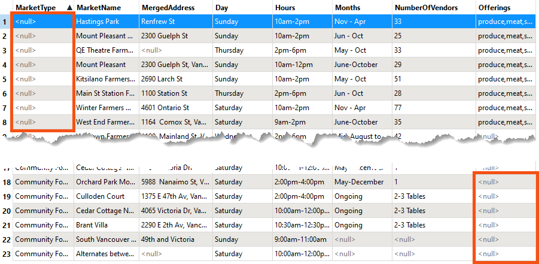
3) Split the Output by Day
One file per market day is more useful than one combined file. Setting the file name from an attribute is what splits the output, and it also sets up the schema problem the next step solves.
- Open the parameters for the writer feature type.
- Click the drop-down arrow beside CSV File Name and change it from fme_feature_type to the Day attribute.
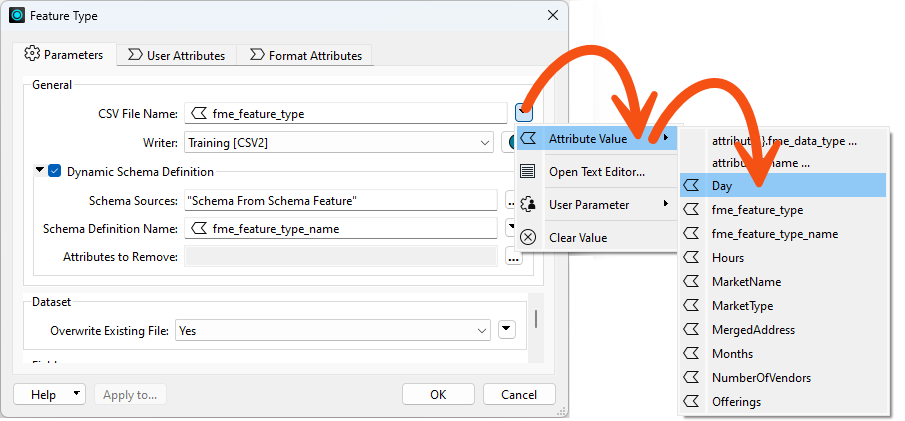
- Re-run the workspace and inspect the outputs.
- In the Saturday and Sunday files some fields hold nulls, but the fields still exist because not every record is null.
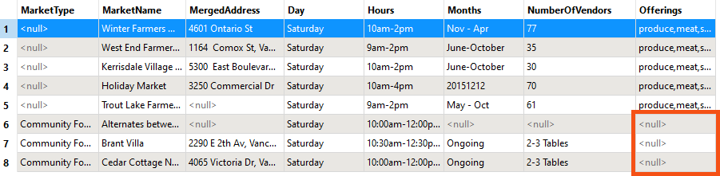
- Open the Wednesday and Thursday files.
- Some fields there are entirely null, and the fields still exist. There is only one output schema and every output dataset uses it.
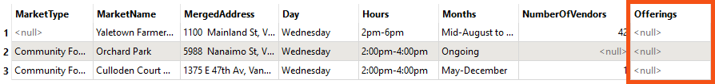
4) Group the SchemaScanner by Day
Grouping makes the SchemaScanner emit one schema feature per group instead of one for everything. That is what lets each day's file describe only the attributes that day actually has.
- Open the SchemaScanner, enable Group Processing, and set Group By to the Day attribute.
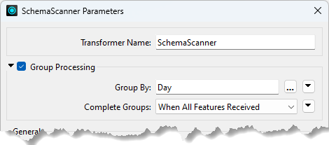
- Re-run the workspace.
- There are now four schema features, one per day. The fme_feature_type_name attribute, which names the schema, is what distinguishes them.
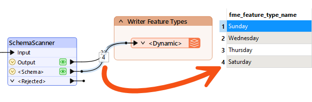
- Inspect the Wednesday output.
- Wednesday was missing Offerings entirely, so that attribute is now absent from its file. Each dataset has its own schema, and the SchemaScanner is still set to ignore missing, null and empty attributes.
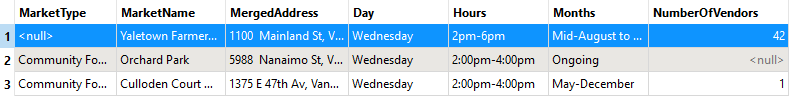
5) Include Empty Attributes
Ignoring empty attributes is not always what you want. Interpreting the upstream schema keeps them, and FME works out the data type from wherever it can find it earlier in the workspace.
- Open the SchemaScanner and change Missing/Null/Empty Attributes from Ignore to Interpret Upstream Schema (Advanced).
- Re-run the workspace and inspect the schema feature for Thursday.
- Thursday now carries a MarketType attribute even though every value is empty, typed as fme_varchar(21) because FME could read that from the reader schema.
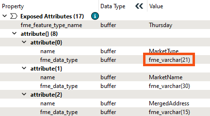
You have combined two datasets with different schemas through one dynamic reader, split the output by day, and given each day its own schema. Switching between ignoring and interpreting empty attributes controls whether a column survives into an output that has no values for it.
Tips
- The Missing/Null/Empty Attributes parameter only acts when an attribute is empty across the whole group. An attribute that is null for some records and populated for others is always kept.
- When there are no values at all, the SchemaScanner cannot infer a type by scanning. Its two alternatives to Ignore are a default varchar of unknown length, or tracing back upstream for a better answer.
- Selecting View Written Data on a dynamic or generic writer feature type usually opens the Select Dataset to View dialog, because FME does not know the format or path in advance. Specify the format and dataset to view the data. The same happens with a writer feature type fanout, where the output path depends on an attribute value FME only reads at run time.